Acordeón con <details>. Capturas HQ EM + renders DF en shots/. X/nitter bloqueado → ia_x=0.
En una frase: ★ Ingevec citada (DF + La Tercera) celebrando toma de razón OGUC; Presupuesto 2027 y Consejo Minero marcan Enfoques de domingo; IA: admisión universitaria (EM), Anthropic–Akamai, BlackRock; Brasil cierra campaña Lula/Flávio; bandas extranjeras y reforma de seguridad en Nacional. EM: 158 págs / 316 arts; sin Ingevec en EM.
Durante años, postular a una universidad en Estados Unidos suponía preparar una serie de documentos que van más allá de las notas: cartas de recomendación, registros de actividades extracurriculares y ensayos enfocados en mostrar quién era el candidato y por qué le interesaba cierta casa de estudios.
Con la irrupción de la inteligencia artificial, este escenario ha ido cambiando, con universidades como la de Georgia, Cornell y Virginia anunciando que optaron por reducir el número de ensayos que exigen que sus postulantes les envíen.
Tras dejar de lado el texto en que los candidatos debían explicar por qué querían estudiar allí, Michael Strecker, vocero de la U. de Tulane, dijo a The New York Times que las dudas respecto de ensayos generados con IA “definitivamente fueron un factor”. Christoph Guttentag, quien hasta 2025 fue decano de admisión de pregrado de la U. de Duke, señaló que la IA aceleró la constatación de que “la palabra escrita, en este contexto, no necesariamente representa cómo piensa o escribe alguien”.
El fenómeno no se limita a EE.UU. Durante 2026, distintos episodios han puesto en discusión cómo evaluar las capacidades de quienes buscan acceder a la educación superior y hasta dónde las universidades deben permitir el uso de estas nuevas herramientas.
Uno de los casos más recientes ocurrió en México, luego que la U. Nacional Autónoma de ese país realizara por primera vez en línea su examen de ingreso a las licenciaturas. Tras notar resultados anómalos y sospechar de irregularidades —entre ellas, el uso de IA por varios postulantes—, la institución suspendió temporalmente las matrículas y decidió aplicar una prueba presencial a los seleccionados. Después de revisar lo ocurrido, la universidad optó por no volver, por ahora, a la modalidad virtual y mantener sus exámenes de ingreso de manera presencial.
Para Ana Henríquez, directora del Observatorio de Inteligencia Artificial en Educación de la U. de Las Américas, el episodio evidencia cómo las nuevas herramientas aumentan las posibilidades de vulnerar ciertas evaluaciones.
“Modelos de IA, actualmente inclusive los que son gratuitos (...) te permiten responder de manera satisfactoria un alto porcentaje de preguntas, sobre todo del ámbito escolar, como las que se miden en estos casos”, señala.
Ante la dificultad de eliminar por completo el riesgo de engaño, en otros lugares la respuesta ha sido distinta: transparentar el uso de la tecnología. Así, por ejemplo, la U. of New South Wales, en Australia, establece que los postulantes declaren si recurrieron a IA generativa en la elaboración de los trabajos que se les exigen. Si lo hicieron, deben especificar qué herramienta usaron, con qué propósito y qué instrucciones (o prompts) le entregaron.
A los interesados incluso se les advierte que deben estar preparados para proporcionar la conversación completa con el sistema y explicar qué sugerencias aceptaron o dejaron de lado.
Sin embargo, la presencialidad tampoco elimina del todo los nuevos riesgos. En junio, un postulante a Medicina de la National Taiwan University fue descalificado después de ser sorprendido usando lentes inteligentes con IA durante un examen de ingreso.
Ingevec: Señal de gobernanza de IA en procesos de selección: transparencia, detección y equity.
Captura EM · EM
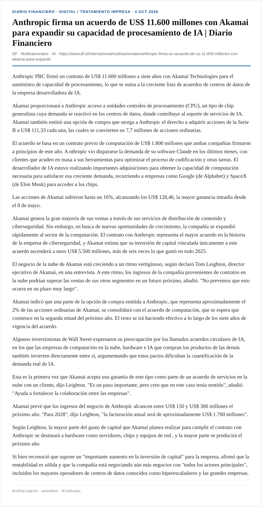
Anthropic PBC firmó un contrato de US$ 11.600 millones a siete años con Akamai Technologies para el suministro de capacidad de procesamiento, lo que se suma a la creciente lista de acuerdos de centros de datos de la empresa desarrolladora de IA.
Akamai proporcionará a Anthropic acceso a unidades centrales de procesamiento (CPU), un tipo de chip generalista cuya demanda se reactivó en los centros de datos, donde contribuye al soporte de servicios de IA. Akamai también emitió una opción de compra que otorga a Anthropic el derecho a adquirir acciones de la Serie B a US$ 111,33 cada una, las cuales se convierten en 7,7 millones de acciones ordinarias.
El acuerdo se basa en un contrato previo de computación de US$ 1.800 millones que ambas compañías firmaron a principios de este año. A nthropic vio dispararse la demanda de su software Claude en los últimos meses, con clientes que acuden en masa a sus herramientas para optimizar el proceso de codificación y otras tareas. El desarrollador de IA estuvo realizando importantes adquisiciones para obtener la capacidad de computación necesaria para satisfacer esa creciente demanda, recurriendo a empresas como Google (de Alphabet) y SpaceX (de Elon Musk) para acceder a los chips.
Las acciones de Akamai subieron hasta un 16%, alcanzando los US$ 128,46, la mayor ganancia intradía desde el 8 de mayo.
Akamai genera la gran mayoría de sus ventas a través de sus servicios de distribución de contenido y ciberseguridad. Sin embargo, en busca de nuevas oportunidades de crecimiento, la compañía se expandió rápidamente al sector de la computación. El contrato con Anthropic representa el mayor acuerdo en la historia de la empresa de ciberseguridad, y Akamai estima que su inversión de capital vinculada únicamente a este acuerdo ascenderá a unos US$ 5.500 millones, más de seis veces lo que gastó en todo 2025.
El negocio de la nube de Akamai está creciendo a un ritmo vertiginoso, según declaró Tom Leighton, director ejecutivo de Akamai, en una entrevista. A este ritmo, los ingresos de la compañía provenientes de contratos en la nube podrían superar las ventas de sus otros segmentos en un futuro próximo, añadió. "No prevemos que esto ocurra en un plazo muy largo".
Akamai indicó que una parte de la opción de compra emitida a Anthropic, que representa aproximadamente el 2% de las acciones ordinarias de Akamai, se consolidará con el acuerdo de computación, que se espera que comience en la segunda mitad del próximo año. El resto se irá haciendo efectivo a lo largo de los siete años de vigencia del acuerdo.
Algunos inversionistas de Wall Street expresaron su preocupación por los llamados acuerdos circulares de IA, en los que las empresas de computación en la nube, hardware e IA que compran los productos de las demás también invierten directamente entre sí, argumentando que estos pactos dificultan la cuantificación de la demanda real de IA.
Ingevec: Demanda de data centers/energía/obra asociada: thesis mediano plazo para EPC e inmobiliario de soporte.
Captura DF · DF
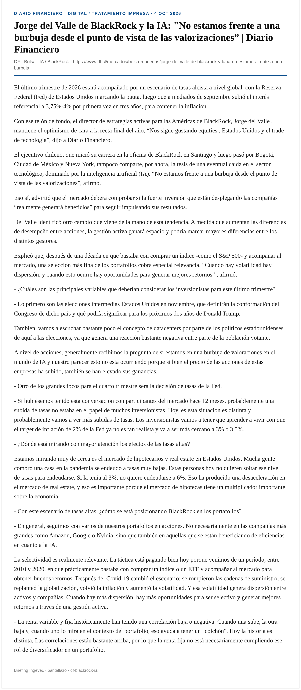
El último trimestre de 2026 estará acompañado por un escenario de tasas alcista a nivel global, con la Reserva Federal (Fed) de Estados Unidos marcando la pauta, luego que a mediados de septiembre subió el interés referencial a 3,75%-4% por primera vez en tres años, para contener la inflación.
Con ese telón de fondo, el director de estrategias activas para las Américas de BlackRock, Jorge del Valle , mantiene el optimismo de cara a la recta final del año. “Nos sigue gustando equities , Estados Unidos y el trade de tecnología”, dijo a Diario Financiero.
El ejecutivo chileno, que inició su carrera en la oficina de BlackRock en Santiago y luego pasó por Bogotá, Ciudad de México y Nueva York, tampoco comparte, por ahora, la tesis de una eventual caída en el sector tecnológico, dominado por la inteligencia artificial (IA). “No estamos frente a una burbuja desde el punto de vista de las valorizaciones”, afirmó.
Eso sí, advirtió que el mercado deberá comprobar si la fuerte inversión que están desplegando las compañías “realmente generará beneficios” para seguir impulsando sus resultados.
Del Valle identificó otro cambio que viene de la mano de esta tendencia. A medida que aumentan las diferencias de desempeño entre acciones, la gestión activa ganará espacio y podría marcar mayores diferencias entre los distintos gestores.
Explicó que, después de una década en que bastaba con comprar un índice -como el S&P 500- y acompañar al mercado, una selección más fina de los portafolios cobra especial relevancia. “Cuando hay volatilidad hay dispersión, y cuando esto ocurre hay oportunidades para generar mejores retornos” , afirmó.
- ¿Cuáles son las principales variables que deberían considerar los inversionistas para este último trimestre?
Captura DF · DF
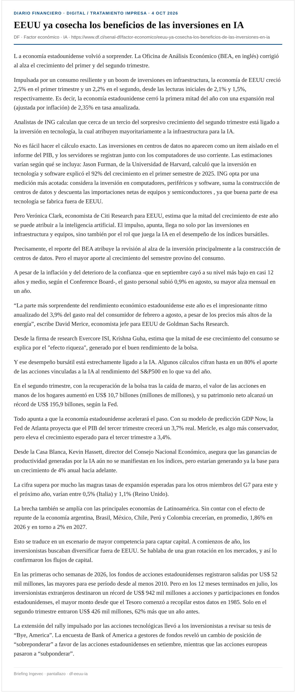
L a economía estadounidense volvió a sorprender. La Oficina de Análisis Económico (BEA, en inglés) corrigió al alza el crecimiento del primer y del segundo trimestre.
Impulsada por un consumo resiliente y un boom de inversiones en infraestructura, la economía de EEUU creció 2,5% en el primer trimestre y un 2,2% en el segundo, desde las lecturas iniciales de 2,1% y 1,5%, respectivamente. Es decir, la economía estadounidense cerró la primera mitad del año con una expansión real (ajustada por inflación) de 2,35% en tasa anualizada.
Analistas de ING calculan que cerca de un tercio del sorpresivo crecimiento del segundo trimestre está ligado a la inversión en tecnología, la cual atribuyen mayoritariamente a la infraestructura para la IA.
No es fácil hacer el cálculo exacto. Las inversiones en centros de datos no aparecen como un ítem aislado en el informe del PIB, y los servidores se registran junto con los computadores de uso corriente. Las estimaciones varían según qué se incluya: Jason Furman, de la Universidad de Harvard, calculó que la inversión en tecnología y software explicó el 92% del crecimiento en el primer semestre de 2025. ING opta por una medición más acotada: considera la inversión en computadores, periféricos y software, suma la construcción de centros de datos y descuenta las importaciones netas de equipos y semiconductores , ya que buena parte de esa tecnología se fabrica fuera de EEUU.
Pero Verónica Clark, economista de Citi Research para EEUU, estima que la mitad del crecimiento de este año se puede atribuir a la inteligencia artificial. El impulso, apunta, llega no solo por las inversiones en infraestructura y equipos, sino también por el rol que juega la IA en el desempeño de los índices bursátiles.
Precisamente, el reporte del BEA atribuye la revisión al alza de la inversión principalmente a la construcción de centros de datos. Pero el mayor aporte al crecimiento del semestre provino del consumo.
Captura DF · DF
Una IA china se acerca a Claude Mythos en pruebas de ciberataques: por qué importa que se pueda descargar gratis Tecnología / La Tercera
Descubrir un fallo en un programa informático y convertirlo en un ataque real son cosas distintas. Lo segundo requiere usar ese defecto para obligar al software a hacer algo no autorizado. Esta capacidad es el foco central deuna evaluación de Anthropic sobre GLM-5.3, lainteligencia artificial de la empresa china Z.ai (Zhipu AI).
El informe sobre este modelo llega en medio deun coro de voces que piden una desaceleración en el desarrollo de la inteligencia artificial, trasvarios incidentes que encendieron las alarmas, y mientras el propio CEO de Anthropic insiste enestablecer normas de gobernanza y regulación.
EnExploitBench, una prueba centrada en vulnerabilidades del motor V8 de Google Chrome, GLM-5.3 logró armar ataques completos en 50 de 410 intentos (en entornos cerrados), frente a los 56 de Claude Mythos Preview. Pero conviene entender qué significa esto en la práctica.
Una IA china se acerca a Claude Mythos en pruebas de ciberataques: por qué importa que se pueda descargar gratis
Ingevec: Riesgo ciber de modelos open/cheap: sandbox y always-ask en agentes con herramientas.
Con buenos ojos y optimismo recibió la industria inmobiliaria la toma de razón por parte de la Contraloría General de la República de los cambios a la Ordenanza General de Urbanismo y Construcciones (OGUC).
Recordemos que la propuesta busca actualizar la regulación a la nueva realidad demográfica del país y, al mismo tiempo, incentivar el desarrollo inmobiliario y aprovechar de mejor manera la infraestructura existente. Entre sus principales cambios se encuentran nuevos parámetros para calcular la densidad, mayores incentivos para construir cerca del transporte público, modificaciones a los denominados conjuntos armónicos y menores exigencias de estacionamientos en determinadas zonas.
La vicepresidenta de la Cámara Chilena de la Construcción (CChC), Helen Martin, sostuvo que contar con el decreto “entrega certezas para poder avanzar en el desarrollo de proyectos”, y destacó que los cambios demográficos y las nuevas formas de vivir obligan a revisar la planificación de las ciudades.
A su juicio, el desafío es permitir que más familias puedan vivir cerca del transporte, servicios, lugares de trabajo y estudio. “Los cambios propuestos a la OGUC deben tender a construir ciudades más inclusivas y que aprovechen la infraestructura existente ”, señaló.
Una lectura similar hizo el director ejecutivo de la Asociación de Desarrolladores Inmobiliarios (ADI), Slaven Razmilic, quien aseguró que la modificación facilitará el acceso de la clase media a la vivienda al permitir que la oferta responda de mejor manera a la composición actual de los hogares.
“La norma se actualiza a la nueva realidad demográfica del país (...) este cambio no implica una hiperdensificación, ya que opera dentro de los límites definidos por la planificación local. La adecuación de los parámetros demográficos busca, precisamente, hacer efectiva esa planificación, junto con ajustes urbanísticos acotados que permitan aprovechar mejor la infraestructura y conectividad existentes”, detalló Razmilic.
Desde Ingevec también calificaron la toma de razón como “una excelente noticia para el sector”, señalando que “abre nuevas oportunidades de desarrollo y permitirá ampliar la oferta y el acceso a la vivienda”, aunque advirtieron que la mayor densificación también exige desarrollar proyectos en equilibrio con las comunidades y su entorno.
El gerente inmobiliario de Colliers, Sergio Correa, puso el foco en otro de los efectos de la modificación: la mayor certeza para el desarrollo de proyectos . Según explicó, “había proyectos detenidos esperando saber con qué reglas se iban a evaluar, y eso hoy se despeja”.
“Con los alcances expuestos, se ha tomado razón del decreto N° 68, de 2026, del Ministerio de Vivienda y Urbanismo”. De esta manera, la contralora general, Dorothy Pérez, le dio luz verde al decreto para modificar la Ordenanza General de Urbanismo y Construcción (OGUC), por medio del cual el gobierno busca reducir los precios de los inmuebles y reactivar al sector.
A fines de julio, el Minvu ingresó a la Contraloría el decreto para hacer las modificaciones a la OGUC. La propuesta fue menos ambiciosa de lo que se planteó inicialmente. Pese a esto, a principios de septiembre, la entidad liderada por Iván Poduje retiró el documento que estaba siendo sometido a revisión por la entidad fiscalizadora.
Con esto, se abrieron las especulaciones entre inmobiliarios y alcaldes. Bajo reserva, se hablaba de que el mentado decreto podría enfrentar un largo período de análisis y reformulación.
“El objetivo de esto (retirar el decreto de Contraloría) es mejorar la propuesta, que tenga mayor consenso y que sea más sustentable también para la ciudad, pero genera reglas claras para los privados y esperamos ingresarla la próxima semana”, dijo el secretario de Estado al justificar su decisión.
Luego, el 16 de septiembre, el ministerio reingresó el decreto a Contraloría y, ayer 1 de octubre, la contralora tomó razón del documento.
“… En cuanto a los fundamentos técnicos de la regulación establecida, y respecto de los cuales se han formulado distintas consideraciones en una serie de presentaciones ingresadas a esta sede de control, cumple con hacer presente que si bien se han analizado dichos elementos, tales aspectos constituyen materias cuya apreciación corresponde primariamente a la autoridad sectorial competente, y, además, que la toma de razón del decreto del rubro no puede implicar un pronunciamiento de este órgano de fiscalización acerca del mérito, oportunidad o conveniencia de las decisiones adoptadas por la administración”, dijo Dorothy Pérez en el oficio en que visó el mentado decreto.
Ingevec: Ingevec citada en DF y La Tercera: califica la toma de razón de la OGUC como “excelente noticia” / “abre nuevas oportunidades… ampliar oferta y acceso a la vivienda”, con advertencia de densificar en equilibrio con comunidades.
Captura DF industria · Captura DF OGUC · DF industria · DF Contraloría · La Tercera
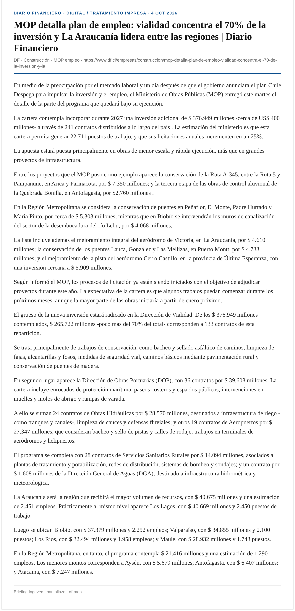
En medio de la preocupación por el mercado laboral y un día después de que el gobierno anunciara el plan Chile Despega para impulsar la inversión y el empleo, el Ministerio de Obras Públicas (MOP) entregó este martes el detalle de la parte del programa que quedará bajo su ejecución.
La cartera contempla incorporar durante 2027 una inversión adicional de $ 376.949 millones -cerca de US$ 400 millones- a través de 241 contratos distribuidos a lo largo del país . La estimación del ministerio es que esta cartera permita generar 22.711 puestos de trabajo, y que sus licitaciones anuales incrementen en un 25%.
La apuesta estará puesta principalmente en obras de menor escala y rápida ejecución, más que en grandes proyectos de infraestructura.
Entre los proyectos que el MOP puso como ejemplo aparece la conservación de la Ruta A-345, entre la Ruta 5 y Pampanune, en Arica y Parinacota, por $ 7.350 millones; y la tercera etapa de las obras de control aluvional de la Quebrada Bonilla, en Antofagasta, por $2.760 millones .
En la Región Metropolitana se considera la conservación de puentes en Peñaflor, El Monte, Padre Hurtado y María Pinto, por cerca de $ 5.303 millones, mientras que en Biobío se intervendrán los muros de canalización del sector de la desembocadura del río Lebu, por $ 4.068 millones.
La lista incluye además el mejoramiento integral del aeródromo de Victoria, en La Araucanía, por $ 4.610 millones; la conservación de los puentes Lauca, González y Las Mellizas, en Puerto Montt, por $ 4.733 millones; y el mejoramiento de la pista del aeródromo Cerro Castillo, en la provincia de Última Esperanza, con una inversión cercana a $ 5.909 millones.
Según informó el MOP, los procesos de licitación ya están siendo iniciados con el objetivo de adjudicar proyectos durante este año. La expectativa de la cartera es que algunos trabajos puedan comenzar durante los próximos meses, aunque la mayor parte de las obras iniciaría a partir de enero próximo.
Ingevec: Pipeline de obra pública / contratistas: timing y mix vialidad vs otros programas.
Captura DF · DF
La disponibilidad de oficinas de lujo clase A en Santiago alcanzó su menor nivel desde 2021, lo que según el último reporte de Cushman & Wakefield, sugiere una evolución gradual hacia condiciones más favorables para los propietarios, especialmente en el segmento de grandes superficies corporativas.
Al cierre del tercer trimestre de 2026, la superficie disponible se redujo 9.323 metros cuadrados (m2), pasando desde 163.004 m2 a 153.681 m2, mientras que la tasa de vacancia bajó desde 8,9% a 8,4%, destacó la consultora.
Las Condes, detalló el informe, continuó posicionándose como la comuna con menor disponibilidad, con una vacancia de 4,6%. Dentro de este sector, El Golf y Nueva Las Condes registraron tasas de 3,2% y 4,1%, respectivamente, consolidándose como los submercados más ajustados. Estoril, en tanto, alcanzó una vacancia de 6,5% y evidenció una actividad positiva durante el trimestre.
Rosario Meneses, subgerente de Market Research Chile señaló: “Estamos en un escenario en que se está reduciendo el stock disponible, con una demanda que se mantiene activa y con incorporación acotada de nueva oferta. Esto podría acelerar las decisiones de los ocupantes y fortalecer el interés de los inversionistas por activos consolidados”.
Durante el tercer trimestre, la absorción neta alcanzó 9.323 m2, completando tres trimestres consecutivos con resultados positivos. Con ello, la absorción acumulada durante 2026 llegó a 24.653 m2, aunque a un ritmo más moderado que el registrado durante 2025.
Las Condes concentró la mayor actividad del período, con una absorción neta de 6.033 m2. El Golf lideró este desempeño, con 3.708 m2, seguido por Nueva Las Condes, con 2.267 m2, y Estoril, con 867 m2. También destacó Nueva Providencia, con 3.976 m2. En contraste, Providencia presentó una absorción negativa de 2.561 m2 y Apoquindo de 809 m2.
Captura DF · DF
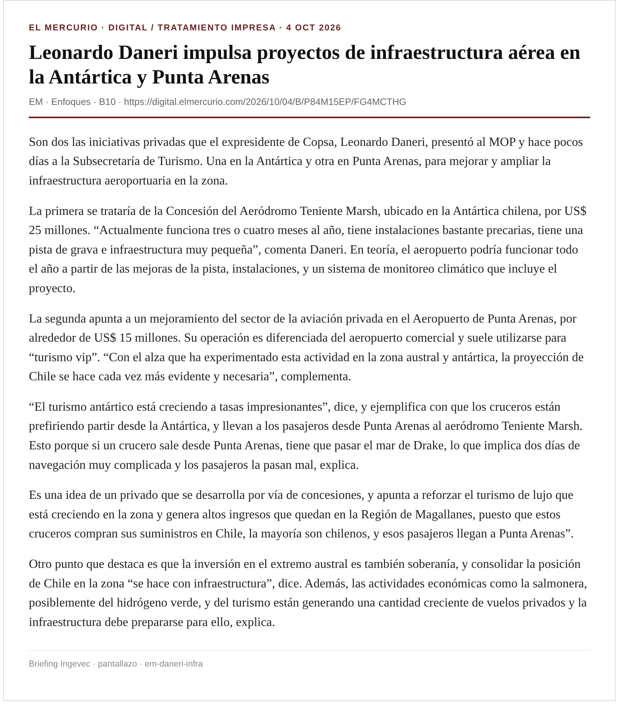
Son dos las iniciativas privadas que el expresidente de Copsa, Leonardo Daneri, presentó al MOP y hace pocos días a la Subsecretaría de Turismo. Una en la Antártica y otra en Punta Arenas, para mejorar y ampliar la infraestructura aeroportuaria en la zona.
La primera se trataría de la Concesión del Aeródromo Teniente Marsh, ubicado en la Antártica chilena, por US$ 25 millones. “Actualmente funciona tres o cuatro meses al año, tiene instalaciones bastante precarias, tiene una pista de grava e infraestructura muy pequeña”, comenta Daneri. En teoría, el aeropuerto podría funcionar todo el año a partir de las mejoras de la pista, instalaciones, y un sistema de monitoreo climático que incluye el proyecto.
La segunda apunta a un mejoramiento del sector de la aviación privada en el Aeropuerto de Punta Arenas, por alrededor de US$ 15 millones. Su operación es diferenciada del aeropuerto comercial y suele utilizarse para “turismo vip”. “Con el alza que ha experimentado esta actividad en la zona austral y antártica, la proyección de Chile se hace cada vez más evidente y necesaria”, complementa.
“El turismo antártico está creciendo a tasas impresionantes”, dice, y ejemplifica con que los cruceros están prefiriendo partir desde la Antártica, y llevan a los pasajeros desde Punta Arenas al aeródromo Teniente Marsh. Esto porque si un crucero sale desde Punta Arenas, tiene que pasar el mar de Drake, lo que implica dos días de navegación muy complicada y los pasajeros la pasan mal, explica.
Es una idea de un privado que se desarrolla por vía de concesiones, y apunta a reforzar el turismo de lujo que está creciendo en la zona y genera altos ingresos que quedan en la Región de Magallanes, puesto que estos cruceros compran sus suministros en Chile, la mayoría son chilenos, y esos pasajeros llegan a Punta Arenas”.
Otro punto que destaca es que la inversión en el extremo austral es también soberanía, y consolidar la posición de Chile en la zona “se hace con infraestructura”, dice. Además, las actividades económicas como la salmonera, posiblemente del hidrógeno verde, y del turismo están generando una cantidad creciente de vuelos privados y la infraestructura debe prepararse para ello, explica.
Captura EM · EM
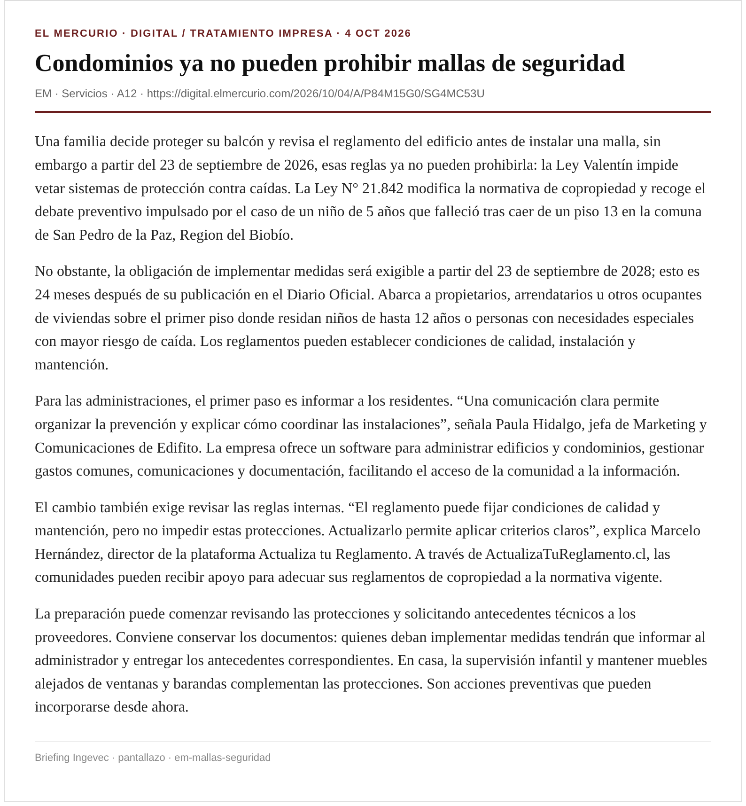
Una familia decide proteger su balcón y revisa el reglamento del edificio antes de instalar una malla, sin embargo a partir del 23 de septiembre de 2026, esas reglas ya no pueden prohibirla: la Ley Valentín impide vetar sistemas de protección contra caídas. La Ley N° 21.842 modifica la normativa de copropiedad y recoge el debate preventivo impulsado por el caso de un niño de 5 años que falleció tras caer de un piso 13 en la comuna de San Pedro de la Paz, Region del Biobío.
No obstante, la obligación de implementar medidas será exigible a partir del 23 de septiembre de 2028; esto es 24 meses después de su publicación en el Diario Oficial. Abarca a propietarios, arrendatarios u otros ocupantes de viviendas sobre el primer piso donde residan niños de hasta 12 años o personas con necesidades especiales con mayor riesgo de caída. Los reglamentos pueden establecer condiciones de calidad, instalación y mantención.
Para las administraciones, el primer paso es informar a los residentes. “Una comunicación clara permite organizar la prevención y explicar cómo coordinar las instalaciones”, señala Paula Hidalgo, jefa de Marketing y Comunicaciones de Edifito. La empresa ofrece un software para administrar edificios y condominios, gestionar gastos comunes, comunicaciones y documentación, facilitando el acceso de la comunidad a la información.
El cambio también exige revisar las reglas internas. “El reglamento puede fijar condiciones de calidad y mantención, pero no impedir estas protecciones. Actualizarlo permite aplicar criterios claros”, explica Marcelo Hernández, director de la plataforma Actualiza tu Reglamento. A través de ActualizaTuReglamento.cl, las comunidades pueden recibir apoyo para adecuar sus reglamentos de copropiedad a la normativa vigente.
La preparación puede comenzar revisando las protecciones y solicitando antecedentes técnicos a los proveedores. Conviene conservar los documentos: quienes deban implementar medidas tendrán que informar al administrador y entregar los antecedentes correspondientes. En casa, la supervisión infantil y mantener muebles alejados de ventanas y barandas complementan las protecciones. Son acciones preventivas que pueden incorporarse desde ahora.
Ingevec: Normativa de copropiedad / seguridad en edificios: impacto en postventa y reglamentos.
Captura EM · EM
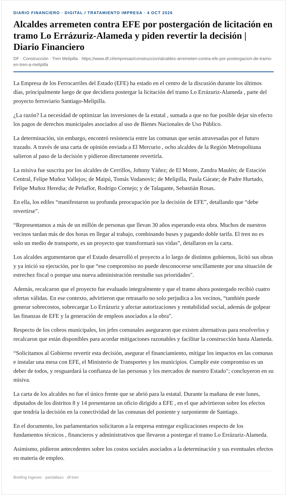
La Empresa de los Ferrocarriles del Estado (EFE) ha estado en el centro de la discusión durante los últimos días, principalmente luego de que decidiera postergar la licitación del tramo Lo Errázuriz-Alameda , parte del proyecto ferroviario Santiago-Melipilla.
¿La razón? La necesidad de optimizar las inversiones de la estatal , sumada a que no fue posible dejar sin efecto los pagos de derechos municipales asociados al uso de Bienes Nacionales de Uso Público.
La determinación, sin embargo, encontró resistencia entre las comunas que serán atravesadas por el futuro trazado. A través de una carta de opinión enviada a El Mercurio , ocho alcaldes de la Región Metropolitana salieron al paso de la decisión y pidieron directamente revertirla.
La misiva fue suscrita por los alcaldes de Cerrillos, Johnny Yáñez; de El Monte, Zandra Maulén; de Estación Central, Felipe Muñoz Vallejos; de Maipú, Tomás Vodanovic; de Melipilla, Paula Gárate; de Padre Hurtado, Felipe Muñoz Heredia; de Peñaflor, Rodrigo Cornejo; y de Talagante, Sebastián Rosas.
En ella, los ediles “manifestaron su profunda preocupación por la decisión de EFE”, detallando que “debe revertirse”.
Captura DF · DF
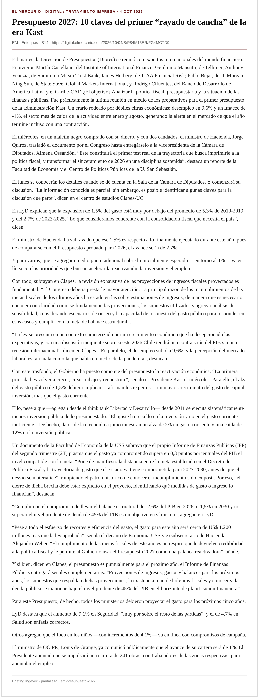
E l martes, la Dirección de Presupuestos (Dipres) se reunió con expertos internacionales del mundo financiero. Estuvieron Martín Castellano, del Institute of International Finance; Gerónimo Mansutti, de Tellimer; Anthony Venezia, de Sumitomo Mitsui Trust Bank; James Herberg, de TIAA Financial Risk; Pablo Bejar, de JP Morgan; Ning Sun, de State Street Global Markets International, y Rodrigo Cifuentes, del Banco de Desarrollo de América Latina y el Caribe-CAF. ¿El objetivo? Analizar la política fiscal, presupuestaria y la situación de las finanzas públicas. Fue prácticamente la última reunión en medio de los preparativos para el primer presupuesto de la administración Kast. Un erario rodeado por débiles cifras económicas: desempleo en 9,6% y un Imacec de -1%, el sexto mes de caída de la actividad entre enero y agosto, generando la alerta en el mercado de que el año termine incluso con una contracción.
El miércoles, en un maletín negro comprado con su dinero, y con dos candados, el ministro de Hacienda, Jorge Quiroz, trasladó el documento por el Congreso hasta entregárselo a la vicepresidenta de la Cámara de Diputados, Ximena Ossandón. “Este constituirá el primer test real de la trayectoria que busca imprimirle a la política fiscal, y transformar el sinceramiento de 2026 en una disciplina sostenida”, destaca un reporte de la Facultad de Economía y el Centro de Políticas Públicas de la U. San Sebastián.
El lunes se conocerán los detalles cuando se dé cuenta en la Sala de la Cámara de Diputados. Y comenzará su discusión. “La información conocida es parcial; sin embargo, es posible identificar algunas claves para la discusión que parte”, dicen en el centro de estudios Clapes-UC.
En LyD explican que la expansión de 1,5% del gasto está muy por debajo del promedio de 5,3% de 2010-2019 y del 2,7% de 2023-2025. “Lo que consideramos coherente con la consolidación fiscal que necesita el país”, dicen.
El ministro de Hacienda ha subrayado que ese 1,5% es respecto a lo finalmente ejecutado durante este año, pues de compararse con el Presupuesto aprobado para 2026, el avance sería de 2,7%.
Y para varios, que se agregara medio punto adicional sobre lo inicialmente esperado —en torno al 1%— va en línea con las prioridades que buscan acelerar la reactivación, la inversión y el empleo.
Con todo, subrayan en Clapes, la revisión exhaustiva de las proyecciones de ingresos fiscales proyectados es fundamental. “El Congreso debería prestarle mayor atención. La principal razón de los incumplimientos de las metas fiscales de los últimos años ha estado en las sobre estimaciones de ingresos, de manera que es necesario conocer con claridad cómo se fundamentan las proyecciones, los supuestos utilizados y agregar análisis de sensibilidad, considerando escenarios de riesgo y la capacidad de respuesta del gasto público para responder en esos casos y cumplir con la meta de balance estructural”.
“La ley se presenta en un contexto caracterizado por un crecimiento económico que ha decepcionado las expectativas, y con una discusión incipiente sobre si este 2026 Chile tendrá una contracción del PIB sin una recesión internacional”, dicen en Clapes. “En paralelo, el desempleo subió a 9,6%, y la percepción del mercado laboral es tan mala como la que había en medio de la pandemia”, destacan.
Con este trasfondo, el Gobierno ha puesto como eje del presupuesto la reactivación económica. “La primera prioridad es volver a crecer, crear trabajo y reconstruir”, señaló el Presidente Kast el miércoles. Para ello, el alza del gasto público de 1,5% debiera implicar —afirman los expertos— un mayor crecimiento del gasto de capital, inversión, más que el gasto corriente.
Ello, pese a que —agregan desde el think tank Libertad y Desarrollo— desde 2011 se ejecuta sistemáticamente menos inversión pública de lo presupuestado. “El ajuste ha recaído en la inversión y no en el gasto corriente ineficiente”. De hecho, datos de la ejecución a junio muestran un alza de 2% en gasto corriente y una caída de 12% en la inversión pública.
Ingevec: Ancla de gasto/inversión pública 2027 para planificación comercial y obra.
Captura EM · EM
L a mayor caída de la producción minera en 30 años se registró en agosto. Retrocedió 17,4% y con ello arrastró al Índice Mensual de Actividad Económica (Imacec), que se desplomó 1% en el octavo mes del año. El negativo registro sorprendió al Gobierno, no así a la industria.
“Fue mayor de la que esperábamos hace tres o cuatro meses, pero era esperable en relación a lo que vimos en agosto y septiembre”, explica Joaquín Villarino, presidente del Consejo Minero.
Se explaya. “Hubo fenómenos que se produjeron al mismo tiempo, como que dos o tres yacimientos grandes estaban pasando dentro de sus planes mineros por períodos de explotación de sectores con más bajas leyes, también durante mucho tiempo tuvimos postergaciones de mantención y en las cuales nos estábamos poniendo al día y eso tiene efecto. Y además influyó el factor climático, donde en agosto y septiembre hubo bajísimas temperaturas, altísimos vientos, nevazones, y por seguridad, algunas faenas paralizaron uno, dos o tres días, y eso tiene impacto en producción”.
“Sí, y está relacionado al fenómeno legislativo por el cual pasó Chile durante cinco años. La minería chilena estuvo bastante detenida en inversiones relevantes para expansiones y desarrollo producto de la discusión del royalty , constitucional y decisiones administrativas.
El retraso de la entrada de proyectos mineros obedeció a decisiones administrativas, y cuando hemos rechazado y postergado el otorgamiento de permisos para iniciar nuevas obras, lo que hicimos como país y como Estado fue postergar inversiones y, por lo tanto, postergar la entrada de nueva producción.
Por ejemplo, cuando el Comité de Ministros en el gobierno de Boric rechazó el proyecto integrado de Los Bronces, rechaza producción; cuando hemos rechazado el proyecto de Penco para Tierras Raras por los naranjillos; cuando hemos retrasado la aprobación de proyectos por las chinchillas; cuando hemos rechazado el cierre de proyectos para iniciar uno nuevo como Pascua Lama; cuando hemos rechazado aprobar el acceso de recursos hídricos como es el caso de Collahuasi; cuando hemos paralizado la planta desalinizadora de Collahuasi, etc.
Y estuvimos cinco años discutiendo un proyecto de royalty que en alguna de sus etapas establecía cargas tributarias del 80% de la utilidad. ¿Quién estaba dispuesto a hacer inversiones estructurales profundas para incrementar la producción? Nadie.
Sumado, tuvimos una discusión constitucional que promovía que la minería tenía que desaparecer o nacionalizarla”.
Captura EM · EM
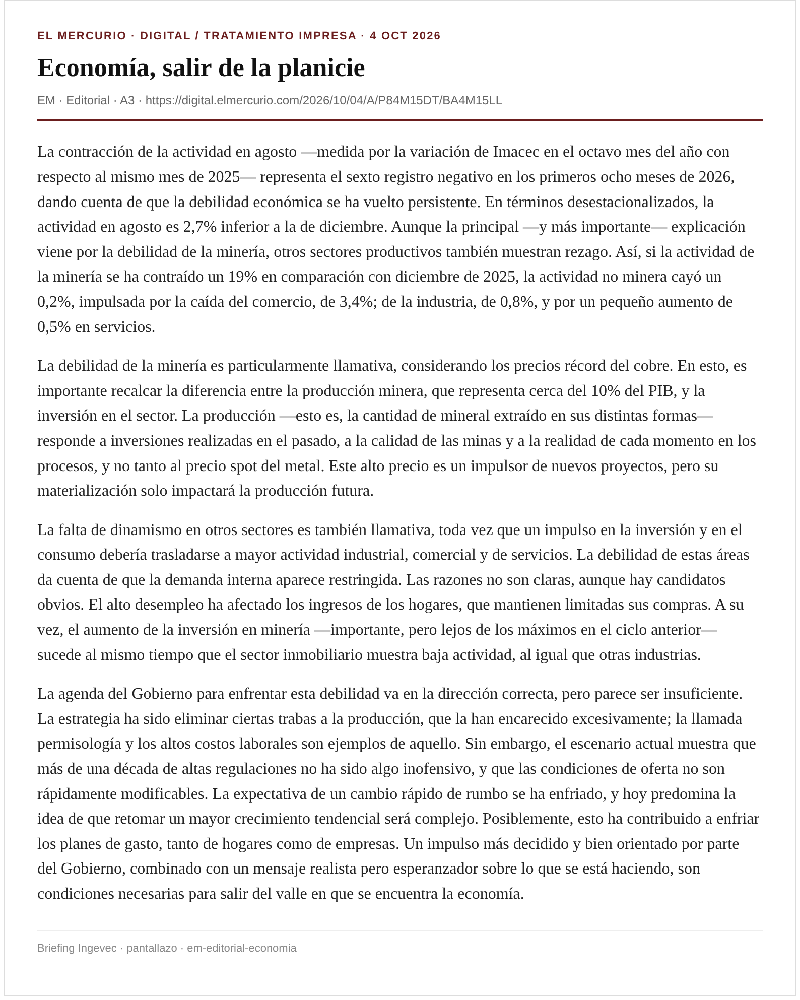
La contracción de la actividad en agosto —medida por la variación de Imacec en el octavo mes del año con respecto al mismo mes de 2025— representa el sexto registro negativo en los primeros ocho meses de 2026, dando cuenta de que la debilidad económica se ha vuelto persistente. En términos desestacionalizados, la actividad en agosto es 2,7% inferior a la de diciembre. Aunque la principal —y más importante— explicación viene por la debilidad de la minería, otros sectores productivos también muestran rezago. Así, si la actividad de la minería se ha contraído un 19% en comparación con diciembre de 2025, la actividad no minera cayó un 0,2%, impulsada por la caída del comercio, de 3,4%; de la industria, de 0,8%, y por un pequeño aumento de 0,5% en servicios.
La debilidad de la minería es particularmente llamativa, considerando los precios récord del cobre. En esto, es importante recalcar la diferencia entre la producción minera, que representa cerca del 10% del PIB, y la inversión en el sector. La producción —esto es, la cantidad de mineral extraído en sus distintas formas— responde a inversiones realizadas en el pasado, a la calidad de las minas y a la realidad de cada momento en los procesos, y no tanto al precio spot del metal. Este alto precio es un impulsor de nuevos proyectos, pero su materialización solo impactará la producción futura.
La falta de dinamismo en otros sectores es también llamativa, toda vez que un impulso en la inversión y en el consumo debería trasladarse a mayor actividad industrial, comercial y de servicios. La debilidad de estas áreas da cuenta de que la demanda interna aparece restringida. Las razones no son claras, aunque hay candidatos obvios. El alto desempleo ha afectado los ingresos de los hogares, que mantienen limitadas sus compras. A su vez, el aumento de la inversión en minería —importante, pero lejos de los máximos en el ciclo anterior— sucede al mismo tiempo que el sector inmobiliario muestra baja actividad, al igual que otras industrias.
La agenda del Gobierno para enfrentar esta debilidad va en la dirección correcta, pero parece ser insuficiente. La estrategia ha sido eliminar ciertas trabas a la producción, que la han encarecido excesivamente; la llamada permisología y los altos costos laborales son ejemplos de aquello. Sin embargo, el escenario actual muestra que más de una década de altas regulaciones no ha sido algo inofensivo, y que las condiciones de oferta no son rápidamente modificables. La expectativa de un cambio rápido de rumbo se ha enfriado, y hoy predomina la idea de que retomar un mayor crecimiento tendencial será complejo. Posiblemente, esto ha contribuido a enfriar los planes de gasto, tanto de hogares como de empresas. Un impulso más decidido y bien orientado por parte del Gobierno, combinado con un mensaje realista pero esperanzador sobre lo que se está haciendo, son condiciones necesarias para salir del valle en que se encuentra la economía.
Captura EM · EM
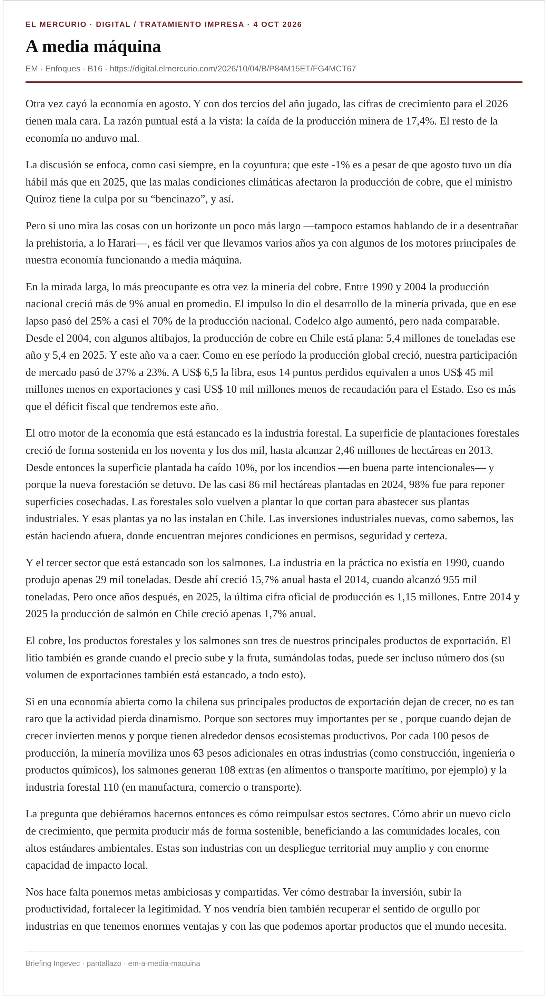
Otra vez cayó la economía en agosto. Y con dos tercios del año jugado, las cifras de crecimiento para el 2026 tienen mala cara. La razón puntual está a la vista: la caída de la producción minera de 17,4%. El resto de la economía no anduvo mal.
La discusión se enfoca, como casi siempre, en la coyuntura: que este -1% es a pesar de que agosto tuvo un día hábil más que en 2025, que las malas condiciones climáticas afectaron la producción de cobre, que el ministro Quiroz tiene la culpa por su “bencinazo”, y así.
Pero si uno mira las cosas con un horizonte un poco más largo —tampoco estamos hablando de ir a desentrañar la prehistoria, a lo Harari—, es fácil ver que llevamos varios años ya con algunos de los motores principales de nuestra economía funcionando a media máquina.
En la mirada larga, lo más preocupante es otra vez la minería del cobre. Entre 1990 y 2004 la producción nacional creció más de 9% anual en promedio. El impulso lo dio el desarrollo de la minería privada, que en ese lapso pasó del 25% a casi el 70% de la producción nacional. Codelco algo aumentó, pero nada comparable. Desde el 2004, con algunos altibajos, la producción de cobre en Chile está plana: 5,4 millones de toneladas ese año y 5,4 en 2025. Y este año va a caer. Como en ese período la producción global creció, nuestra participación de mercado pasó de 37% a 23%. A US$ 6,5 la libra, esos 14 puntos perdidos equivalen a unos US$ 45 mil millones menos en exportaciones y casi US$ 10 mil millones menos de recaudación para el Estado. Eso es más que el déficit fiscal que tendremos este año.
El otro motor de la economía que está estancado es la industria forestal. La superficie de plantaciones forestales creció de forma sostenida en los noventa y los dos mil, hasta alcanzar 2,46 millones de hectáreas en 2013. Desde entonces la superficie plantada ha caído 10%, por los incendios —en buena parte intencionales— y porque la nueva forestación se detuvo. De las casi 86 mil hectáreas plantadas en 2024, 98% fue para reponer superficies cosechadas. Las forestales solo vuelven a plantar lo que cortan para abastecer sus plantas industriales. Y esas plantas ya no las instalan en Chile. Las inversiones industriales nuevas, como sabemos, las están haciendo afuera, donde encuentran mejores condiciones en permisos, seguridad y certeza.
Y el tercer sector que está estancado son los salmones. La industria en la práctica no existía en 1990, cuando produjo apenas 29 mil toneladas. Desde ahí creció 15,7% anual hasta el 2014, cuando alcanzó 955 mil toneladas. Pero once años después, en 2025, la última cifra oficial de producción es 1,15 millones. Entre 2014 y 2025 la producción de salmón en Chile creció apenas 1,7% anual.
Captura EM · EM
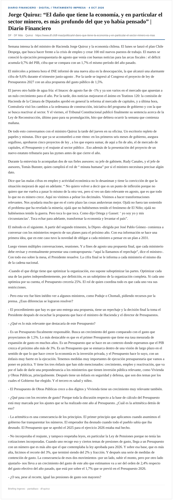
Semana intensa la del ministro de Hacienda Jorge Quiroz y la economía chilena. El lunes se lanzó el plan Chile Despega, que busca hacer frente a la crisis de empleo y crear 100 mil nuevos puestos de trabajo. El martes se conoció la ejecución presupuestaria de agosto que venía con buenas noticias para las arcas fiscales : el déficit acumula 0,7% del PIB, cifra que se compara con un 1,7% el mismo período del año pasado.
El miércoles a primera hora el INE informó de una nueva alza en la desocupación, la que alcanzó una alarmante cifra de 9,6% durante el trimestre junio-agosto . Por la tarde se ingresó al Congreso el proyecto de ley de Presupuestos 2027 con un alza propuesta del gasto público de 1,5%.
El jueves otro balde de agua fría: el Imacec de agosto fue de -1% y ya son varios en el mercado que apuestan a un nulo crecimiento para el año. Por la tarde, dos noticias mejoraron el ánimo en Teatinos 120: la comisión de Hacienda de la Cámara de Diputados aprobó en general la reforma al mercado de capitales, y a última hora, Contraloría visó los cambios a la ordenanza de construcción, iniciativa del programa de gobierno y con la que se busca reactivar al sector. Y el viernes, el Tribunal Constitucional publicó finalmente su sentencia acerca de la Ley de Reconstrucción, último paso para su promulgación, hito que debiera ocurrir la semana que comienza mañana.
De todo esto conversamos con el ministro Quiroz la tarde del jueves en su oficina. Un escritorio repleto de papeles y minutas. Dice que ya se acostumbró a este ritmo: en los primeros seis meses de gobierno, asegura orgulloso, aprobaron cinco proyectos de ley , a los que espera sumar, de aquí a fin de año, el de mercado de capitales, el Presupuesto y el reajuste al sector público . Eso además de la presentación del proyecto de un nuevo estatuto tributario para las pymes antes de que cierre el año.
Durante la entrevista lo acompañan dos de sus fieles asesores: su jefe de gabinete, Rudy Canales, y el jefe de asesores, Tomás Bunster, quien cumplirá el rol de “ minuta humana” por si el ministro necesitara precisar algún dato.
Dice que las malas cifras en empleo y actividad económica no lo desaniman y tiene la convicción de que la situación mejorará de aquí en adelante. “ No quiero volver a decir que es un punto de inflexión porque no quiero que me vuelva a pasar lo mismo de la otra vez, pero sí veo un dato relevante en agosto, que es que todo lo que no es minero crece. Aquí no vinimos a pelear los decimales. Vinimos a hacer transformaciones relevantes. Nos ayudaría mucho que en el corto plazo las cosas anduvieran mejor. Ojalá no fuera tan sostenido el problema que ha revelado la minería; ojalá que no hubiésemos tenido el fenómeno de El Niño; ojalá no hubiésemos tenido la guerra. Pero toca lo que toca. Como dijo Ortega y Gasset: ‘ yo soy yo y mis circunstancias’. Toca echar para adelante, transformar la economía y levantar el país”.
El método es el siguiente. A partir del segundo trimestre, la Dipres -dirigida por José Pablo Gómez- comienza a conversar con los ministerios respecto de sus planes para el próximo año. Con esa información se hace una primera idea, que en este caso tuvo la novedad de obligar a cada ministro a pensar en un plan a 2031.
Captura DF · DF
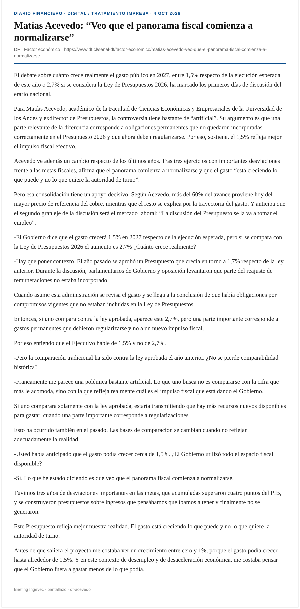
El debate sobre cuánto crece realmente el gasto público en 2027, entre 1,5% respecto de la ejecución esperada de este año o 2,7% si se considera la Ley de Presupuestos 2026, ha marcado los primeros días de discusión del erario nacional.
Para Matías Acevedo, académico de la Facultad de Ciencias Económicas y Empresariales de la Universidad de los Andes y exdirector de Presupuestos, la controversia tiene bastante de “artificial”. Su argumento es que una parte relevante de la diferencia corresponde a obligaciones permanentes que no quedaron incorporadas correctamente en el Presupuesto 2026 y que ahora deben regularizarse. Por eso, sostiene, el 1,5% refleja mejor el impulso fiscal efectivo.
Acevedo ve además un cambio respecto de los últimos años. Tras tres ejercicios con importantes desviaciones frente a las metas fiscales, afirma que el panorama comienza a normalizarse y que el gasto “está creciendo lo que puede y no lo que quiere la autoridad de turno”.
Pero esa consolidación tiene un apoyo decisivo. Según Acevedo, más del 60% del avance proviene hoy del mayor precio de referencia del cobre, mientras que el resto se explica por la trayectoria del gasto. Y anticipa que el segundo gran eje de la discusión será el mercado laboral: “La discusión del Presupuesto se la va a tomar el empleo”.
-El Gobierno dice que el gasto crecerá 1,5% en 2027 respecto de la ejecución esperada, pero si se compara con la Ley de Presupuestos 2026 el aumento es 2,7% ¿Cuánto crece realmente?
-Hay que poner contexto. El año pasado se aprobó un Presupuesto que crecía en torno a 1,7% respecto de la ley anterior. Durante la discusión, parlamentarios de Gobierno y oposición levantaron que parte del reajuste de remuneraciones no estaba incorporado.
Captura DF · DF
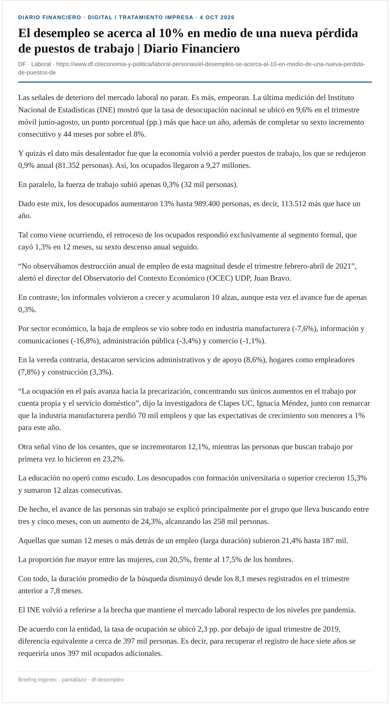
Las señales de deterioro del mercado laboral no paran. Es más, empeoran. La última medición del Instituto Nacional de Estadísticas (INE) mostró que la tasa de desocupación nacional se ubicó en 9,6% en el trimestre móvil junio-agosto, un punto porcentual (pp.) más que hace un año, además de completar su sexto incremento consecutivo y 44 meses por sobre el 8%.
Y quizás el dato más desalentador fue que la economía volvió a perder puestos de trabajo, los que se redujeron 0,9% anual (81.352 personas). Así, los ocupados llegaron a 9,27 millones.
En paralelo, la fuerza de trabajo subió apenas 0,3% (32 mil personas).
Dado este mix, los desocupados aumentaron 13% hasta 989.400 personas, es decir, 113.512 más que hace un año.
Tal como viene ocurriendo, el retroceso de los ocupados respondió exclusivamente al segmento formal, que cayó 1,3% en 12 meses, su sexto descenso anual seguido.
Captura DF · DF
En los últimos días han surgido en Brasil alertas sobre una posible interferencia extranjera en las elecciones. La agencia de inteligencia informó a autoridades europeas sobre presuntas acciones de Estados Unidos y Rusia, mientras la campaña de Lula pidió al Tribunal Superior Electoral (TSE) investigar como posible interferencia la suspensión de servicios consulares estadounidenses en Brasil.
Ayer, el presidente del TSE, Kassio Nunes Marques, aseguró que no existe ninguna amenaza concreta identificada por los órganos de inteligencia contra la realización de la primera vuelta de las elecciones hoy, ya sea de agentes extranjeros o del crimen organizado.
“El elector no debe creer en informaciones falsas creadas solo para generar confusión”, manifestó el ministro a O Globo.
Aunque durante la campaña recorrieron distintas zonas de Brasil, el Presidente Luiz Inácio Lula da Silva y el senador Flávio Bolsonaro reservaron sus últimos cartuchos para el Sudeste, donde ambos cerraron sus campañas antes de la primera vuelta presidencial, en una señal del peso electoral de la región.
Ambos candidatos llegan a la elección de hoy en un escenario muy estrecho. La última encuesta Datafolha, divulgada ayer, le dio al mandatario el 45% de los votos válidos, contra el 42% de Flávio Bolsonaro, con un margen de error de dos puntos porcentuales. En el escenario de una eventual segunda vuelta la diferencia es todavía menor: 47% de Lula contra 46% de Bolsonaro.
El sondeo de Quaest, en tanto, le da una ventaja de 46% contra 45% al Presidente. En el balotaje la situación se revierte y el senador se quedaría con el 44% y el mandatario con el 42%. Esa encuesta también tiene un margen de error de dos puntos.
“Tenemos pocas horas para hacer continuamente el mayor gesto de la revolución democrática de este país. Ellos acabaron con todo. Y nosotros reconstruimos. Ahora, el próximo mandato es para hacer la revolución educacional y tecnológica en este país”, aseguró ayer Lula, montado en un auto en la Avenida Paulista, en São Paulo, repleta de poleras y banderas rojas, el color del Partido de los Trabajadores (PT).
En su discurso también se dirigió directamente a las personas mayores de 70 años, segmento en el que el Presidente tiene un amplio respaldo de acuerdo a Datafolha, pero que no están obligadas a ir a votar. “Necesitamos convencer a las personas de 70 años que ellas tienen que votar por su hijo, por su padre, por su hermano. Nadie puede considerarse incapaz a los 70 años. Yo tengo 80 y me siento como un niño de 15”, dijo, junto al candidato a gobernador por el PT, Fernando Haddad, y otras autoridades.
Captura EM · EM
Aunque, tal como en 2022, la elección presidencial de hoy se disputa entre el Presidente Luiz Inácio Lula da Silva y Bolsonaro —esta vez Flávio, el hijo del exmandatario Jair Bolsonaro—, en esta ocasión el líder izquierdista llega con una ventaja menor que la que tenía en ese entonces, por lo que los indecisos serán clave.
Si hay alguien que sabe de ese tema es Felipe Nunes, socio fundador de Quaest, una de las encuestadoras más reputadas del país, quien dice haberse visto sorprendido porque la polarización que se ve en el país no se tradujo en una decisión temprana del electorado. “Para quienes siguen la política diariamente, la elección comenzó hace mucho tiempo. Para muchos brasileños, recién se está comenzando a exigir una elección ahora”, dice a “El Mercurio”.
—¿Qué está realmente en juego en esta primera vuelta y qué elementos debemos observar para entender el resultado?
“La primera vuelta definirá las condiciones en las que los candidatos llegarán a la etapa decisiva. Importa quién termina adelante, pero importa mucho la distancia entre ambos y dónde están los votos que todavía podrán ser conquistados. Un candidato puede liderar la primera vuelta y encontrar más dificultades para crecer en la segunda.
Yo observaría tres elementos: la diferencia entre Lula y Flávio, el tamaño y el perfil del electorado de los demás candidatos y la capacidad de transformar intención de voto en participación. En una elección tan estrecha, movilizar a quienes ya prefieren a un candidato puede ser tan importante como convencer a quienes todavía están indecisos. También necesitamos mirar la distribución regional: ventajas nacionales similares pueden esconder equilibrios territoriales muy diferentes”.
“Lo que más me llama la atención es la llegada de la hora de la decisión para una parte del electorado. Para quienes siguen la política diariamente, la elección comenzó hace mucho tiempo. Para muchos brasileños, recién se está comenzando a exigir una elección ahora. En la encuesta del 21 de septiembre, la indecisión espontánea cayó de 41% a 35% en una semana. Lula y Flávio crecieron tres puntos cada uno en esa pregunta.
Captura EM · EM
Decenas de miles de personas tomaron ayer Madrid y otras ciudades españolas para exigir soluciones a la crisis de la vivienda, y con llamados a una huelga general, después de que el Congreso rechazara medidas propuestas por el gobierno de Pedro Sánchez, mientras se especial con un adelanto de las elecciones.
“Todos tenemos derecho a la vivienda y no hay derecho a lo que está pasando”, dijo a AFP Adhara Freile, una jardinera de 41 años que se unió a la protesta en la capital española.
Unas 70.000 personas participaron en la manifestación, según la delegación del gobierno español en Madrid, una cifra que elevó hasta los 500.000 uno de los organizadores, el Sindicato de Inquilinas.
Allí, donde activistas mantienen desde hace una semana un campamento en la céntrica Plaza del Sol, varias hileras convergieron en la Plaza de Cibeles, también en la zona histórica de la ciudad, bajo el lema “Hacia la huelga general”.
“Lo que se respira en las calles es una nueva energía (...) que viene de demostrar que ocho días de poder popular son capaces de hacer mucho más que ocho años de gobierno progresista”, dijo Valeria Racu, portavoz del Sindicato de Inquilinas, en referencia al Ejecutivo del socialista Pedro Sánchez. Esa agrupación, que convocó las movilizaciones en Madrid y otras 53 ciudades de España a lo largo del fin de semana, pidió que se organice “de forma inmediata” una huelga general, destacó el diario El Mundo.
Las manifestaciones se desarrollaron de forma pacífica excepto en Valencia, donde hubo enfrentamientos entre manifestantes y policías. Los disturbios terminaron con nueve agentes heridos leves y cinco personas detenidas, según informó la prensa local.
Ingevec: Crisis habitacional como fenómeno global: paralelo a debate OGUC/densificación local.
Captura EM · EM
Las amenazas sobre un posible corte de suministro de diésel por parte del presidente de Estados Unidos , Donald Trump, finalmente se esfumaron, pero bastó la advertencia para que se encendieran las alarmas en territorio nacional.
En este escenario, el Ministerio de Energía reveló a Señal DF que a mediados de octubre, una comisión encabezada por la ministra Ximena Rincón, viajará a Arabia Saudita junto a la plana mayor de ENAP para abrir nuevas alternativas de abastecimiento. En ese lugar, se reunirán con delegaciones de China, Qatar, India y de todos los Emiratos.
Rincón viajará acompañada por el presidente del directorio de ENAP, Cristián Muga; su gerente general, Julio Friedmann; y la jefa del departamento de hidrocarburos de la CNE, Priscila Rodríguez.
El día 12 de octubre participará de un encuentro de ministros de energía del mundo y el 13 la agenda contempla reuniones bilaterales con potenciales proveedores, incluyendo contactos con Saudi Aramco . Durante la gira se firmará un memorándum de entendimiento con el Ministerio de Energía de Arabia Saudita para fortalecer la cooperación energética.
“Hemos estado en permanente conversación con el Ministerio de Hacienda y de Relaciones Exteriores para evaluar las alternativas de suministro de diésel. Si bien Trump confirmó que no cancelará las exportaciones, esto nos demuestra que no podemos depender de un solo país. Debemos ponernos en todos los escenarios y analizar las alternativas”, afirmó la ministra de Energía, Ximena Rincón.
Captura DF · DF
Maickel Villegas permaneció varios minutos dentro de un Chevrolet Sail la noche del 21 de febrero. Su misión era clara: grabar el momento en que un grupo de venezolanos secuestraban a un compatriota, el teniente Ronald Ojeda, y lo subían a un Nissan Versa. Además de ello, prestó cobertura durante el plagio, el que terminó finalmente con el asesinato del exmilitar del país caribeño. Por ello, a dos años y ocho meses de esa escena, Villegas fue sentenciado.
La indagatoria no solo permitió una primera condena en dicho caso, sino que también identificar que los responsables tienen directo vínculo con el Tren de Aragua —a través de la facción “Los Piratas”—, organización criminal extranjera con mayor presencia en el país.Por otro lado, la fiscalía informó durante la semana la formalización de una veintena de imputados —16 de ellos ya en cárceles de varias regiones— vinculados con el Primer Comando de la Capital, una estructura criminal brasileña. El fiscal metropolitano Sur, Héctor Barros, explicó que fueron “bautizados” por la organización y que varios llevaban años operando en Chile. Así se suma una nueva organización a una larga lista de estructuras criminales que se han comenzado a hacer conocidas durante los últimos años.
Eso sí, desde el Ministerio Público, Ignacio Castillo, director de Crimen Organizado, explica que existe una diferencia entre presencia y vínculo, la cual “no es puramente semántica”. Y desarrolla que “hablamos de presencia cuando una organización criminal” se instala de forma “relativamente estable”. Eso, menciona, se puede ver con mayor claridad “en organizaciones como el Tren de Aragua y Los Pulpos”.
Por otro lado, cuando se habla de vínculo, “lo que vemos es a organizaciones extranjeras que utilizan Chile de manera más instrumental: por ejemplo, nuestros puertos para sacar droga hacia otros mercados”. Eso sí, advierte que “hay una zona intermedia”, donde un “vínculo ocasional puede empezar a transformarse en una instalación más permanente”.
El último informe de crimen organizado del Ministerio Público sitúa que en Chile existe la presencia de 16 organizaciones extranjeras y se detallan vínculos con otras cuatro. El Cartel Jalisco Nueva Generación y el de Sinaloa, ambos de México, por un par de imputados o condenados que tendrían vínculos con ellos y relacionados con hechos en las regiones de Valparaíso y O'Higgins.
A su vez, la fiscalía también ha situado al Comando Vermelho, de Brasil. No obstante, la relación sería a raíz de un proveedor de una banda nacional que vendía sustancias ilegales a sujetos vinculados con dicha estructura. Diferente es el caso del Primer Comando de la Capital, el que también estaba identificada por la institución persecutora como organización con “vínculos”.
Al respecto, Castillo señala que la investigación de la Fiscalía Regional Metropolitana Sur mostraría que “al menos en algunos casos, esos vínculos habrían avanzado un poco más”. Y continúa que “eso es relevante porque da cuenta de un intento de instalación que pudo ser detectado y desarticulado en una etapa todavía temprana”.
Ingevec: Seguridad en obras/barrios: capa operativa para proyectos y subcontratos.
Captura EM · EM
“Ordenar la casa siempre supone algunos dolores”, dice el senador Javier Macaya (UDI) desde su oficina en la sede del Congreso en Santiago, sobre estos 207 días de Gobierno.
“El Gobierno ha sido capaz de sacar adelante gran parte de su agenda, entendiendo que probablemente había costos políticos que asumir en estos primeros seis meses”, agrega el legislador.
Antes de instalarse el 11 de marzo en su nuevo espacio de trabajo, la oficina era del entonces senador Juan Antonio Coloma —actual embajador de Chile en España—. Debido a que el edificio es patrimonio nacional, Macaya no puede alterar las paredes del espacio. Sí mantiene un cuadro del fallecido fundador de la UDI y senador Jaime Guzmán.
El próximo martes, a las 10:00 de la mañana, Macaya encabezará la primera sesión de la comisión especial mixta de Presupuesto, en la cual participará el ministro de Hacienda, Jorge Quiroz.
“Se ha logrado contener el gasto público desmesurado en gasto corriente. Lo que pasa es que ahora se va a poner el foco en la inversión, en gasto que quede permanentemente para el Estado de Chile, en puentes, en carreteras, en viviendas”, dice Macaya, quien además manifiesta su descontento ante la decisión del Gobierno de finalizar el programa de Junaeb “Yo elijo mi PC”. “A mí me gustaría que tengamos una conversación sobre eso, para que se mantenga”, señala.
—Sobre la reforma constitucional de seguridad, los senadores Arturo Squella, Andrés Longton y Pedro Araya anunciaron que el Gobierno la retiraría, lo que luego fue negado por el ministro Claudio Alvarado. ¿Cómo se explica que públicamente se den versiones distintas?
—A los chilenos no les importan los dimes y diretes de si se presenta o retira un proyecto, a los chilenos les importa que su vida mejore y que la seguridad mejore, vivir más seguros y tener más oportunidades, por eso yo creo que lo relevante es el resultado. Si logramos una reforma que cumpla los objetivos que se han trazado, a mí me da lo mismo si lleva la firma del (ex)presidente Boric y que reciclemos una reforma de un gobierno anterior, o presentamos una indicación de un proyecto parlamentario.
Captura EM · EM
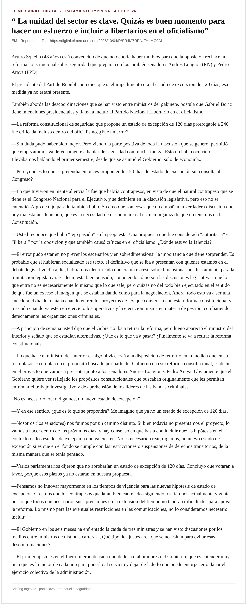
Arturo Squella (48 años) está convencido de que no debería haber motivos para que la oposición rechace la reforma constitucional sobre seguridad que prepara con los también senadores Andrés Longton (RN) y Pedro Araya (PPD).
El presidente del Partido Republicano dice que si el impedimento era el estado de excepción de 120 días, esa medida ya no estará presente.
También aborda las descoordinaciones que se han visto entre ministros del gabinete, postula que Gabriel Boric tiene intenciones presidenciales y llama a incluir al Partido Nacional Libertario en el oficialismo.
—La reforma constitucional de seguridad que propone un estado de excepción de 120 días prorrogable a 240 fue criticada incluso dentro del oficialismo. ¿Fue un error?
—Sin duda pudo haber sido mejor. Pero viendo la parte positiva de toda la discusión que se generó, permitió que empezáramos ya derechamente a hablar de seguridad con mucha fuerza. Esto no había ocurrido. Llevábamos hablando el primer semestre, desde que se asumió el Gobierno, solo de economía...
—Pero ¿qué es lo que se pretendía entonces proponiendo 120 días de estado de excepción sin consulta al Congreso?
—Lo que tuvieron en mente al enviarla fue que habría contrapesos, en vista de que el natural contrapeso que se tiene es el Congreso Nacional para el Ejecutivo, y se definiera en la discusión legislativa, pero eso no se entendió. Algo de tejo pasado también hubo. Yo creo que son cosas que no empañan la verdadera discusión que hoy día estamos teniendo, que es la necesidad de dar un marco al crimen organizado que no tenemos en la Constitución.
Captura EM · EM
Amplias repercusiones generó ayer la carta que el expresidente Eduardo Frei Ruiz-Tagle publicó en “El Mercurio, titulada “Todos unidos contra el crimen organizado”.
En ella, el exmandatario defiende la adhesión de Chile al plan Escudo de las Américas que impulsa el Presidente norteamericano, Donald Trump. Su postura contrasta con la de los exgobernantes Michelle Bachelet y Gabriel Boric, quienes pidieron revisar la permanencia del país en esa iniciativa porque, a su juicio, amenaza la “soberanía nacional”.
Para Frei “la adhesión de Chile al Escudo de las Américas fortalece la respuesta del Estado frente al crimen organizado y el narcotráfico”. Agrega que “integrarse a este mecanismo voluntario abre oportunidades concretas: compartir información oportuna, mejorar el análisis de datos, capacitar a Carabineros y a la Policía de Investigaciones, y profundizar la coordinación fronteriza”.
El canciller Francisco Pérez Mackenna agradeció el respaldo: “Es muy importante su apoyo a las acciones para hacer frente a uno de los mayores desafíos de la región: el crimen organizado. Chile no debe escatimar esfuerzos y los países debemos unirnos para hacer frente a la delincuencia transnacional”, expresó.
Por otro lado, el senador de la comisión de Relaciones Exteriores Iván Moreira (UDI) resaltó “el espíritu republicano y la mirada de estadista del expresidente Frei”.
Generado 2026-10-04 America/Santiago · Fuentes: digital.elmercurio.com + df.cl + La Tercera · Ingevec: SÍ (DF/LT OGUC)